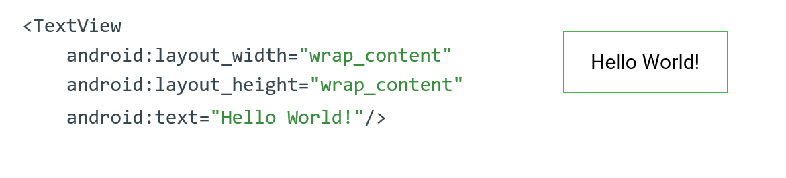
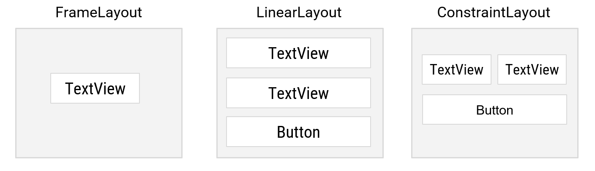
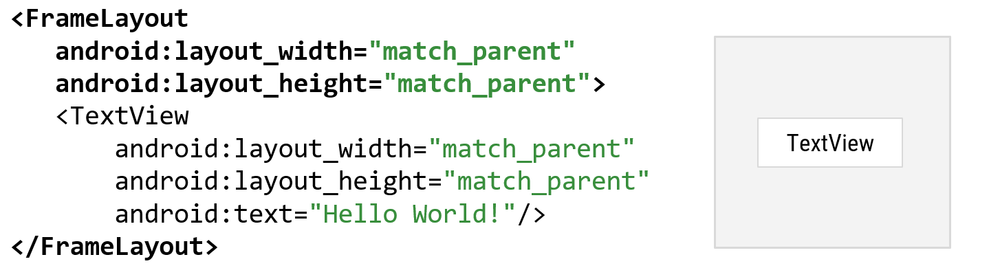
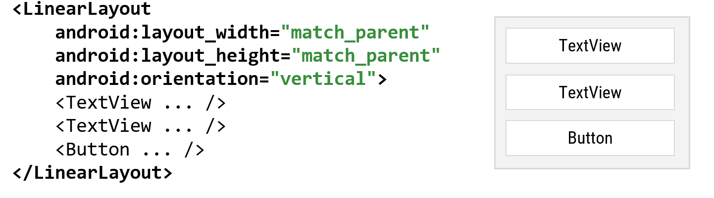
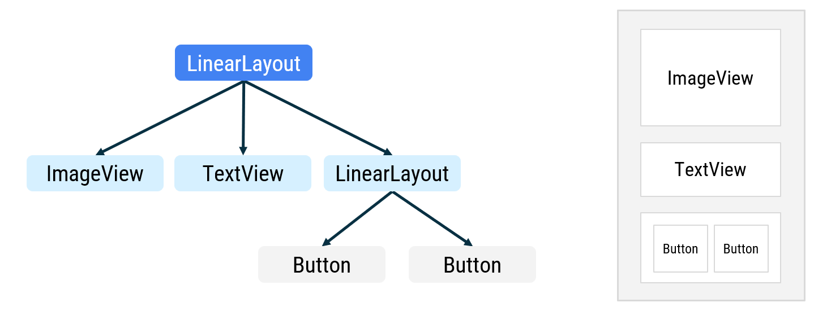
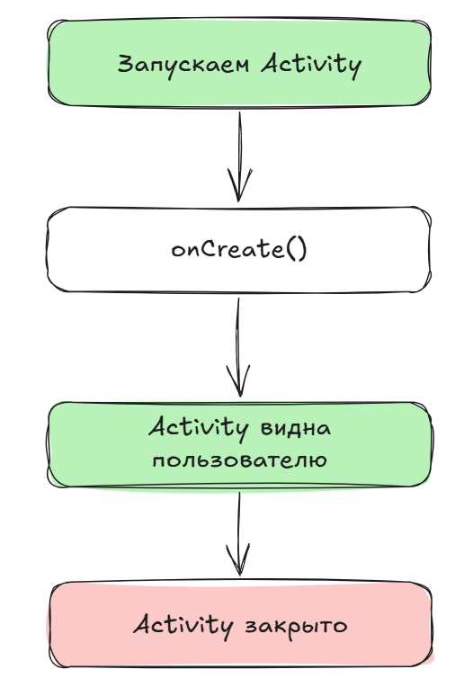
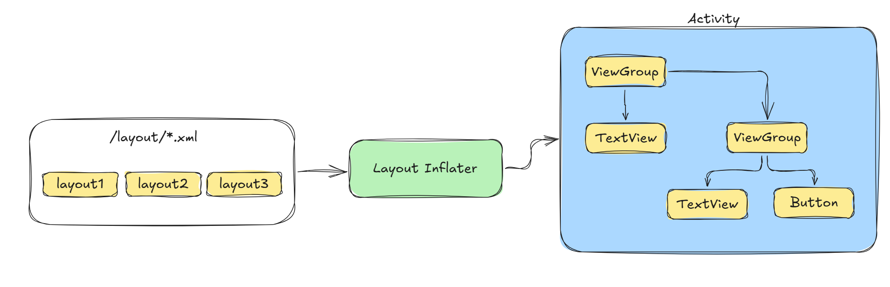

Ползовательский интерфейс (первое Activity)
При создании первого приложения, вы могли увидеть интерфейс работы с “внешним видом” вашего Android-приложения.
По умолчанию, файл /layout/activity_main.xml определяет разметку первой "страницы" (activity), которую видит, с которой взаимодействует пользователь.
 Рис. 1. Окно макета
Рис. 1. Окно макета Activity.
Помимо использования Palette\Политры для добавления новых виджетов, можно также добавлять новые и менять свойства существующих виджетов (View), используя XML-редактор.
Листинг 1. activity_main.xml
<?xml version="1.0" encoding="utf-8"?>
<androidx.constraintlayout.widget.ConstraintLayout xmlns:android="http://schemas.android.com/apk/res/android"
...
...
tools:context=".MainActivity">
<TextView
android:id="@+id/textView2"
android:layout_width="wrap_content"
android:layout_height="wrap_content"
android:text="Hello World!"
app:layout_constraintBottom_toBottomOf="parent"
app:layout_constraintEnd_toEndOf="parent" />
<Button
android:id="@+id/go_to_second_activity"
android:layout_width="wrap_content"
android:layout_height="wrap_content"
android:text="SecondActivity"/>
</androidx.constraintlayout.widget.ConstraintLayout>
Макет Activity, по умолчанию, определяет два виджета (widgets):
ConstraintLayout;
TextView;
p.s. Button (из примера выше) мы добавили после создания первого приложения.
Виджеты представляют собой структурные элементы пользовательского интерфейса. Существую различные виджеты по своим функциям\свойствам: вывод текста на экран, ввод текста, нажатие кнопки и другие взаимодействия с пользователем. В примере выше Button, TextView - это лишь разновидности виджетов.
Размеры виджетов

Рис.2. Пример TextView.
В Android есть несколько способов задать размеры виджета по высоте и ширине на экране.
wrap_content- использует только необходимое количество “места” относительно содержимого внутри виджета. Допустим, если хотим использовать размерViewтолько на размер текста внутри него;match_parent- наследует значение родительского виджета\группы виджетов;Fixed value(db -density-independent pixel) - фиксированное значение почти в пикселях.
android:layout_width="wrap_content"
android:layout_width="match_parent"
android:layout_width="48dp"
ViewGroups
ViewGroup - это некий контейнер, в котором распологаются все элементы экрана (TextView, Buttons, Scroll, ImageView, Fragment, и т.д.).

Рис. 3. Виды ViewGroup.
Если необходимо отобразить несколько элементов на экране, используйте ViewGroup. ViewGroup также контролирует как будут располагаться виджеты внутри контейнера.
Является родительским (parent) для всех виджетов внутри, а сами виджеты называются дочерними (child).
FrameLayout- если хотите использовать только один виджет внутри контейнера (часто используется для Всплывающих окон);LinearLayout- складывает виджеты один за другим в колону по горизонтали или по вертикали;ConstraintLayout- более “свободный” вид помпановки, можно создавать сложные интерфейсы. Android - рекомендует именно его к использованию.
FrameLayout

Рис. 4. ПримерFrameLayout.
LinearLayout

Рис. 5. ПримерLinearLayout.
Иерархия виджетов
Помимо просто виджетов (Views) ViewGroup также может содержать в себе другие ViewGroup. Это создает некую иерархию виджетов, которые зависят от родительского ViewGroup.

Рис. 6. Пример отображения иерархии виджетов.
Идентификаторы виджетов (Resource ID)
Вернемся немного к структуре проекта, в честности к директории res:
app
├── manifests
│ └── AndroidManifets.xml
├── kotlin+java
| └── MainActivity.kt
├── res
│ ├── drawable/
│ ├── layout/
│ ├── mipmap/
| ├── values/
| └── xml/
└── Gradkle Scripts/
Каждый элемент
res- ресурсов Android имеет свой уникальныйresource IDдля доступа к элементу.Важно отметить, что именование ресурсов осуществляется по принципу:
lowercaseиunderscores(напримерactivity_main.xml).Доступ к конкретному объекту ресурсов осуществляется по шаблону:
R.<resource_type>.<resource_name>.
Пример выделения идентификатора виджету:
<TextView
android:id="@+id/textView"
...
...
android:text="Hello World!"
... />
Соответственно, доступ из кода Kotlin мы можем получить по (практически) прямой ссылке: R.id.textView.
Класс Activity
Открывая первое, созданное по умолчанию (или Вами), мы увидим точку входа в программу в таком виде:
class MainActivity : AppCompatActivity() {
override fun onCreate(savedInstanceState: Bundle?) {
super.onCreate(savedInstanceState)
setContentView(R.layout.activity_main)
}
}
Как схематично выглядит запуск Activity (или первый экран Вашего приложения):

Рис. 7. Грубая схема работы Activity.
Вместо запуска, как обычно происходит в большинстве программ, функции main() приложение Android стартует Ваше приложение через класс Activity.
Как только пользователь нажимает на иконку приложения, Android открывает его, запуская основное Activity (можно увидеть свойство в Manifets-файле вашего проекта). В частности, метод (более правильно его назвать callback) onCreate() вызывается первым. Этот метод является одним из нескольких в среде Android. Приложение продолжает свою работу до момента его завершения (системой или пользователем).
Далее, происходит обработка файла /layout/activity_main.xml и его отображение на экране.
setContentView(R.layout.activity_main)
Этот процесс называется LayoutInflation.

Рис. 8. Схематично про LayoutInflater.